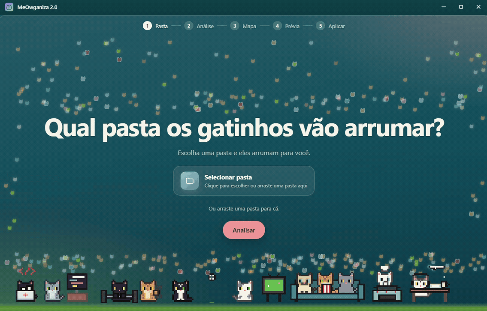

MeOwganiza — demonstração animada
A animação só começa quando o vídeo estiver no centro da tela. Ao sair do centro, ela para no primeiro quadro e recomeça do zero quando você volta.
⏸ Aguardando centralização

A animação só começa quando o vídeo estiver no centro da tela. Ao sair do centro, ela para no primeiro quadro e recomeça do zero quando você volta.
